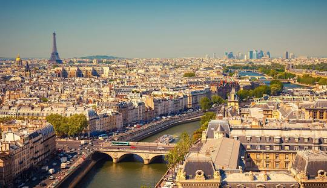
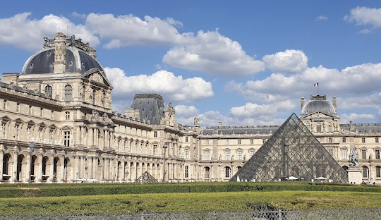

GlobeWonders
París, la "Ciudad de la Luz," es la capital de Francia y uno de los destinos turísticos más icónicos del
mundo.
París, la romántica y elegante capital de Francia, es una ciudad con una rica historia, una abundante
cultura y un aura inconfundible de sofisticación. Ubicada en el norte de Francia, a orillas del río Sena,
París es famosa por sus monumentos icónicos, su gastronomía exquisita y su influyente contribución a la
moda y las artes.
La Torre Eiffel, uno de los símbolos más emblemáticos del mundo, se yergue majestuosamente en el corazón
de París. Los visitantes pueden ascender a sus niveles para disfrutar de vistas panorámicas
impresionantes de la ciudad. Junto a la Torre Eiffel, los Campos Elíseos se extienden como una avenida
lujosa llena de tiendas de alta costura, restaurantes y cafés de renombre.
El Louvre, uno de los museos más grandes y visitados del mundo, alberga una inmensa colección de arte,
incluyendo la enigmática Mona Lisa de Leonardo da Vinci. Además, el Museo de Orsay, con su impresionante
colección de arte impresionista, es otro punto culminante de la escena artística de París.
El barrio de Montmartre es conocido por su ambiente bohemio y la Basílica del Sagrado Corazón, desde
donde se obtienen vistas espectaculares de la ciudad. Los pintores y artistas callejeros hacen de este
lugar un rincón encantador y artístico.
La gastronomía parisina es famosa en todo el mundo. Desde croissants y baguettes en las panaderías
locales hasta platos gourmet en restaurantes con estrellas Michelin, París es un paraíso culinario.
Además, los mercados de alimentos, como el Marché Bastille, ofrecen una auténtica experiencia
gastronómica francesa.
La moda también tiene un lugar importante en París, siendo hogar de las casas de moda más prestigiosas y
la icónica Semana de la Moda de París. Las tiendas en el barrio de Le Marais y los grandes almacenes como
Galeries Lafayette y Le Bon Marché ofrecen una experiencia de compra inigualable.
El transporte público en París es eficiente, con un extenso sistema de metro que facilita la exploración
de la ciudad.
París es una ciudad que ha influido en la cultura global en áreas que van desde la literatura y la moda
hasta la gastronomía y las artes. Su belleza, historia y ambiente romántico la convierten en un destino
deseado por viajeros de todo el mundo, y cada rincón de la ciudad tiene una historia que contar. Desde la
Torre Eiffel hasta los encantadores cafés en Montmartre, París ofrece una experiencia única e inolvidable.